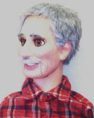

A word from the performer
10/5/2009
{kind=link}

Clinton, I just wanted to write you a note to tell you how much I enjoy the vent figures I purchased from you--"Bart" just before you "retired" from Maher Studios and the old man figure you built for me in February/March of 2008 (photo right - also number 111 in your Super-Supreme photo album.)
The head-stick controls on your figures "fit my hand" better than those on my other two figures. The control levers on these seem to be in just the right position for my fingers. The mechanics of this figure are very smooth. My DummyWorks "Clappy" with brass control rods is not as comfortable to me as yours. The positioning of the control levers is just a little awkward for my hand. Please do not take this as a "criticism" of the figure.
Also my Lovik living-mouth figure (which you repainted in June 2006) is not as comfortable and the mechanics are not quite as smooth as on the ones I purchased from you. And the "ball" that controls the moving eyes is harder for me to use than the eye "lever" on yours. Again, this is not meant as a criticism of the other figures. I just wanted to say thanks for your great work.
Best wishes, Allen Fuller
* * * * * *
Note: To see all the Super-Supreme figures referred to, click here: http://maherphotos3.blogspot.com/